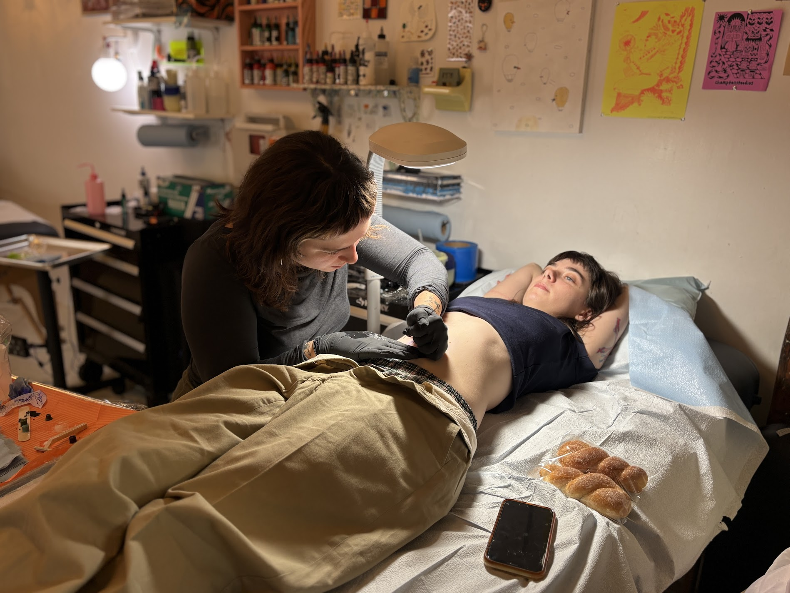

JACOB FONG-GURZINSKY: Independent tattoo collectives in cities like New York are challenging the industry’s traditional career track to make the art form more accessible to new artists.
Lynn Barbera with the New York City News Service speaks with two independent tattoo artists in Brooklyn.
LYNN BARBERA: Sadie Burrows and Sam Maurer have been tattooing for just a couple of years now.
They’re skillsharing today at Professional Tattoo Studio, a Bushwick collective where Maurer has worked for two years.
SAM MAURER: A lot of times I come here and just draw on my desk and it's just like, ugh. It feels like I'm at a cafe but I'm not at a cafe. It's so good.
LYNN BARBERA: Burrows has been tattooing for a year, and before that, she was a frequent client of Maurer’s.
SADIE BURROWS: I feel like she was such a huge inspiration for me. She was so friendly. Immediately she gave me one of her old massage tables that I could take home so I could tattoo people from home, and a bunch of her needles to try and like any advice that I wanted.
LYNN BARBERA: Maurer was eager to share her knowledge and materials, something Burrows says is very common in indie tattoo spaces.
And that’s not usually found across the industry, especially at traditional tattoo shops. Maurer says those spaces tend to have a higher barrier to entry, like requiring formal apprenticeships for new artists.
SADIE BURROWS: I feel like the issue with apprenticeships a lot of the time is it's like unpaid labor.
LYNN BARBERA: Apprenticeships are very competitive. They usually require five to six work days a week, and typically do not pay.
That’s why indie tattoo artists do things differently. They share their knowledge, and skills, for free.
Maurer says one way they do this is through something called a trade, where two artists give each other a tattoo.
SAM MAURER: It's the best part of learning. Because then you're like, I'm going to learn something for real from this person who I admire so much. Or like, how do you get that effect with your machine and stuff?
LYNN BARBERA: Another way indie tattooers learn, and gain experience, is by “guesting” at different tattoo studios.
Out-of-town artists coordinate with a local tattoo collective to use its space and materials during their visit. In exchange, the visiting artist pays a percentage of their earnings to the collective.
The collective also helps the artist find local clients to book appointments and build their following.
Maurer says she likes the community-feel of hosting guest artists.
SAM MAURER: It's cool to have a space you can have your friends come visit.
LYNN BARBERA: Different states have different permit requirements for visiting artists.
For example, New York requires a Temporary Tattoo Artist License for visiting artists working no more than seven consecutive days, and the Department of Health requires the visitor to work under the supervision of a local artist with a valid full-term Tattoo Artist License.
Burrows recently joined a Bushwick tattoo collective named Giftshop, and she’s already continuing the community-based skill sharing model that taught her to tattoo.
SADIE BURROWS: I just did a trade recently with someone who is just starting to do color tattoos, and I have done a lot of color tattoos on myself and other people, so even though she's been tattooing way longer than me and has a very large following and stuff, she was asking me questions about what to do in regards to color tattoos, which is very humbling.
LYNN BARBERA: But today, Burrows is the one getting a tattoo.
She lays back on Maurer’s table with her shirt pulled up above her bellybutton.
She’s getting one of Maurer’s flash designs, two teal mermaids facing outwards with their tails touching in the center.
SAM MAURER: Okay, you ready? Okay, I'm gonna do all the black and I'm using the gray wash black.
LYNN BARBERA: From the New York City News Service, I'm Lynn Barbera.
Tattoo Machine icon by Icons8